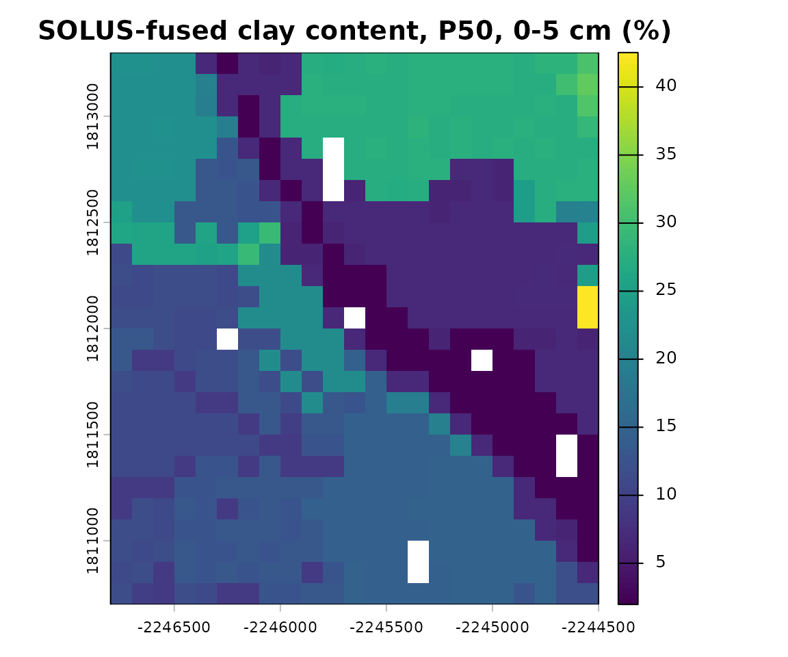
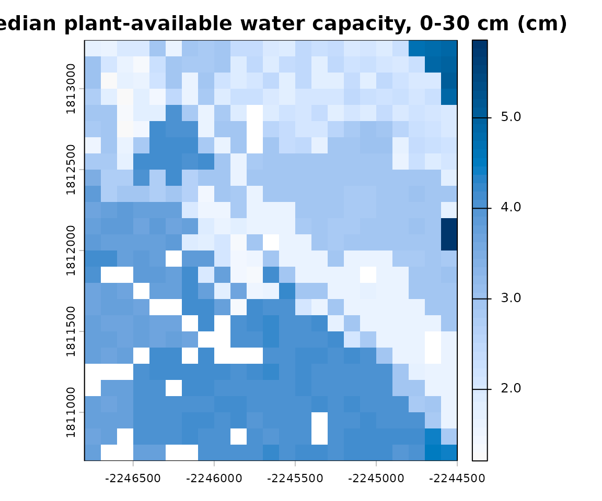
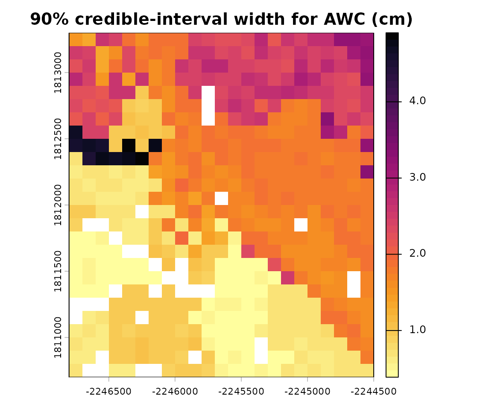

Per-Pixel Fused Ensemble & Available Water Capacity
Source:vignettes/raster-fusion-perpixel-awc.Rmd
raster-fusion-perpixel-awc.RmdOverview
The raster-fusion-ssurgo-solus vignette shows how to
fuse one SSURGO-derived prior against a
one SOLUS100 likelihood into a per-cell posterior for a
single property. This vignette takes the next step: it wires that fused
posterior back into the tabular Monte Carlo framework as a
per-pixel joint ensemble, so that a derived quantity -
here plant-available water capacity (AWC) - can be computed per
realization and summarised into a genuine per-pixel probability
distribution.
The bridge is a rank-preserving re-marginalization of a single joint Monte Carlo ensemble, not an independent per-property resample. Three functions:
| Function | Role |
|---|---|
extract_mukey_joint_ensemble() |
one joint SSURGO Monte Carlo, retained per map unit, row-aligned across depth windows |
remarginalize_ensemble_to_posterior() |
transform each realization’s marginals to the SOLUS-fused posterior, per pixel, keeping the ensemble’s rank copula |
remarginalized_awc() |
AWC per realization from the re-marginalized inputs, then per-pixel percentiles |
AWC needs special handling: SOLUS100 publishes no water-retention variable, so field capacity and wilting point cannot be fused directly. Instead the fusable drivers - sand, silt, clay, bulk density, organic carbon - are fused and re-marginalized, and water retention is derived from them per (pixel, realization) via the Saxton-Rawls pedotransfer function.
See docs/09_multi_source_raster_fusion_pipeline.md ->
“Statistical structure of the per-pixel bridge” for the full treatment
of what the resulting uncertainty band does and does not capture; this
vignette walks the mechanics with real data.
The AOI
The same ~2 km x 2 km Salinas Valley area of interest as the
raster-fusion-ssurgo-solus vignette, chosen for confirmed
real SOLUS100 coverage.
Step 1: one joint SSURGO Monte Carlo ensemble
extract_mukey_joint_ensemble() runs the SSURGO Monte
Carlo once for the whole AOI over the requested depth
windows. Internally, simulate_cokey_generalized() draws
every property jointly under the KSSL reference correlation matrices,
the joint-copula vertical-correlation step runs down each simulated
profile, and the result is aggregated to each depth window
row-aligned: the same row index in the 0-5
and 5-15 matrices is the same simulated
profile.
# The real call this vignette's cached data came from:
windows <- list(c(0, 5), c(5, 15), c(15, 30))
ens <- extract_mukey_joint_ensemble(aoi, windows)
ens <- readRDS(system.file("extdata", "perpixel_ensemble_salinas.rds", package = "soilSIM"))
ens$mukey_raster <- terra::unwrap(ens$mukey_raster) # cached wrapped; see "Where this data came from"
ens$window_names
#> [1] "0-5" "5-15" "15-30"
ens$properties
#> [1] "sand_total" "silt_total" "clay_total" "db" "soc"
length(ens$by_mukey) # one entry per map unit
#> [1] 22Each map unit’s entry is a set of
[realization x property] matrices, one per depth
window:
round(head(ens$by_mukey[[1]]$windows[["0-5"]], 3), 1)
#> sand_total silt_total clay_total db soc
#> [1,] 78.3 19.1 2.1 1.6 1.0
#> [2,] 80.6 17.8 0.9 1.6 1.0
#> [3,] 75.7 24.2 0.4 1.7 0.9Rows are realizations (each a simulated profile draw), columns are
properties drawn jointly. Because the windows are row-aligned,
realization r’s clay content varies with depth but is still
“realization r” at every depth - the vertical link that
keeps a profile coherent:
Step 2: fuse every Saxton-Rawls input against SOLUS in one pass
run_stage1_fusion_multi() produces a per-cell SSURGO x
SOLUS posterior for many properties across
many depth windows, running the (expensive) SSURGO
Monte Carlo simulation just once and reusing that one draw set for every
property/window. Calling the single-property
run_stage1_fusion() in a loop instead would re-run the full
simulation for each of the 5 inputs x 3 windows = 15
combinations, each discarding all but one of the ~9 jointly simulated
properties. dist = "auto" lets the fusion core pick the
distribution family per property.
Because every leaf comes from the same simulation, the
sand/silt/clay posteriors share an exact NA mask (they are
one joint texture draw), and each property’s coverage is a stable,
reproducible consequence of that one run rather than of five independent
ones. Texture and bulk density can still differ: a map unit whose
components have complete bulk-density data but no texture triplet
contributes db but drops out of the texture columns
entirely.
# The real call this vignette's cached data came from - one simulation for all 5 x 3 leaves:
cfg <- function(id, solus_var) list(id = id, solus_variable = solus_var, dist = "auto")
sr_inputs <- c(sand_total = "sandtotal", silt_total = "silttotal", clay_total = "claytotal",
db = "dbovendry", soc = "soc")
property_configs <- setNames(
lapply(names(sr_inputs), function(nm) cfg(nm, sr_inputs[[nm]])),
names(sr_inputs)
)
post <- run_stage1_fusion_multi(aoi, property_configs, windows, simplify = TRUE)
post <- unwrap_nested_rasters(
readRDS(system.file("extdata", "perpixel_posteriors_salinas.rds", package = "soilSIM"))
)
names(post)
#> [1] "sand_total" "silt_total" "clay_total" "db" "soc"
names(post$clay_total)
#> [1] "0-5" "5-15" "15-30"
names(post$clay_total[["0-5"]]$percentiles) # nine percentile-value rasters
#> [1] "P1" "P5" "P10" "P25" "P50" "P75" "P90" "P95" "P99"
terra::plot(post$clay_total[["0-5"]]$percentiles$P50,
main = "SOLUS-fused clay content, P50, 0-5 cm (%)")
Step 3: re-marginalize the ensemble onto the grid
remarginalize_ensemble_to_posterior() maps every
retained source realization through F_prior (the map unit’s
empirical CDF) then F_posterior^-1 (the pixel’s fused
posterior): v_new = F_posterior^-1(F_prior(v_r)).
Crucially, one realization index is used for every property and
every window, so each realization keeps its rank position
everywhere - the transformed ensemble has the source’s cross-property
and cross-depth rank correlations, only the
marginals become the fused posteriors.
rm <- remarginalize_ensemble_to_posterior(ens, post, n_out = 150, summarize = FALSE)
rm$n_kept
#> [1] 150
names(rm$ensemble)
#> [1] "sand_total" "silt_total" "clay_total" "db" "soc"
terra::nlyr(rm$ensemble$clay_total[["0-5"]]) # one layer per retained realization
#> [1] 150The rank copula is preserved
For any pixel, the transformed realizations of two properties keep exactly the Spearman correlation the source SSURGO ensemble has for that pixel’s map unit. Sand and clay are strongly (negatively) correlated - they are compositional parts of the same texture triangle:
w <- "0-5"
grid <- rm$ensemble$clay_total[[w]][[1]]
# per-cell numeric map unit code on the transformed grid
mkn <- terra::resample(ens$mukey_raster, grid, method = "near")
levels(mkn) <- NULL
mk_cell <- as.character(terra::values(mkn)[, 1])
grid_vals <- terra::values(grid)[, 1]
# a map unit that has complete texture data AND at least one pixel in this AOI
pick <- NULL
for (m in names(ens$by_mukey)) {
cm <- which(mk_cell == m & is.finite(grid_vals))
if (!length(cm)) next
if (anyNA(ens$by_mukey[[m]]$windows[[w]][seq_len(rm$n_kept), c("sand_total", "clay_total")])) next
pick <- list(mk = m, cell = cm[1]); break
}
src <- ens$by_mukey[[pick$mk]]$windows[[w]][seq_len(rm$n_kept), ]
tr_sand <- as.numeric(terra::values(rm$ensemble$sand_total[[w]])[pick$cell, ])
tr_clay <- as.numeric(terra::values(rm$ensemble$clay_total[[w]])[pick$cell, ])
round(c(
source = stats::cor(src[, "sand_total"], src[, "clay_total"], method = "spearman"),
transformed = stats::cor(tr_sand, tr_clay, method = "spearman")
), 3)
#> source transformed
#> 0.343 0.342The two values match: the re-marginalization changed each property’s marginal distribution to the fused posterior but left every realization’s rank essentially untouched (they can differ only in the 3rd-4th decimal, where a tie forms because the fused posterior’s tail is clamped flat).
Step 4: per-pixel available water capacity
remarginalized_awc() (default
method = "saxton_rawls") takes, for each realization /
pixel / window, the jointly-consistent
(sand, clay, silt, db, om) values, derives field capacity
and wilting point via saxton_rawls_raster(), and
accumulates AWC = sum_windows (fc - wp)/100 * thickness for
that realization. terra::quantile() over the retained
realizations then gives the per-pixel AWC distribution.
awc <- remarginalized_awc(ens, post, n_out = 150)
awc$n_kept
#> [1] 150
awc$windows_used
#> [1] "0-5" "5-15" "15-30"
names(awc$awc_cm)
#> [1] "P5" "P25" "P50" "P75" "P95"
terra::plot(awc$awc_cm$P50,
main = "Median plant-available water capacity, 0-30 cm (cm)",
col = grDevices::hcl.colors(50, "Blues 3", rev = TRUE))
terra::plot(awc$awc_cm$P95 - awc$awc_cm$P5,
main = "90% credible-interval width for AWC (cm)",
col = grDevices::hcl.colors(50, "inferno", rev = TRUE))
awc_cm$P95 - awc_cm$P5 is a genuine 90% credible
interval because AWC is computed per source realization from vertically-
and cross-property-consistent inputs, then combined per pixel.
Optional: bedrock/restriction-depth-aware AWC
SOLUS100 predicts every property at every depth even where bedrock is
shallower - nothing above truncates the 30 cm profile at an actual
restriction, so a shallow-soil pixel can be credited with water storage
below bedrock. remarginalized_awc()’s optional
restriction_depth argument fixes this: pass a
restriction-depth raster (typically
fetch_solus_restriction_depth(), which defaults to SOLUS’s
anylithicdpt - depth to bedrock, trained specifically on
lithic/paralithic restriction records - and is already
right-censoring-guarded at 201 cm) and each window’s thickness
contribution becomes the per-pixel effective thickness instead
of its nominal one.
This step needs a live SOLUS100 fetch, so it is not part of this
vignette’s cached pipeline - shown for reference, not executed here.
restriction_depth is opt-in (NULL by default
preserves every result above exactly):
restriction_depth <- fetch_solus_restriction_depth(aoi) # default variable = "anylithicdpt"
awc_truncated <- remarginalized_awc(ens, post, n_out = 150, restriction_depth = restriction_depth)
terra::plot(awc_truncated$awc_cm$P50,
main = "Median AWC, 0-30 cm, truncated at bedrock (cm)",
col = grDevices::hcl.colors(50, "Blues 3", rev = TRUE))Reading the uncertainty band
| Aspect | Treatment |
|---|---|
| Marginal uncertainty of each input property | the full SSURGO x SOLUS fused posterior spread per pixel, propagated through Saxton-Rawls - captured |
| Cross-property & cross-depth dependence | the SSURGO tabular copula (KSSL + joint-copula vertical correlation), held fixed - SOLUS carries no joint information, so nothing is re-estimated |
| Correlation type preserved | rank (Spearman), not linear (Pearson) |
| Pedotransfer-function error | not propagated - Saxton-Rawls is applied deterministically per realization |
| Sub-map-unit variation in the dependence structure | none - every pixel in a map unit shares the source ensemble; only the fused marginals vary pixel to pixel |
| Texture compositional closure | independent re-marginalization can leave
sand + silt + clay != 100;
saxton_rawls_raster() renormalizes to 100 when off by more
than 5 |
In short, the per-pixel AWC distribution reflects SOLUS-fused marginal uncertainty threaded through the SSURGO tabular copula, not a fully re-estimated joint posterior and not pedotransfer-model error.
Per-pixel vs. map-unit-collapsed
A cheaper alternative would collapse the fused posterior to one
distribution per map unit (via
zonal_distribution_from_posterior()) and feed that back
through the tabular Monte Carlo. How much does that lose? Compare the
within-map-unit spread of the per-pixel AWC to the between-map-unit
spread:
p50 <- awc$awc_cm$P50
mkr <- terra::resample(ens$mukey_raster, p50, method = "near")
within <- terra::zonal(p50, mkr, fun = "sd", na.rm = TRUE)
between <- terra::zonal(p50, mkr, fun = "mean", na.rm = TRUE)
c(mean_within_mapunit_sd = mean(within[[2]], na.rm = TRUE),
between_mapunit_sd = stats::sd(between[[2]], na.rm = TRUE))
#> mean_within_mapunit_sd between_mapunit_sd
#> 0.1322606 1.2337473Whether the ratio is negligible is
property-dependent: benchmarking on a comparable AOI
found it around 0.01 for clay content and pH (a map-unit-collapsed feed
loses almost nothing) but around 0.42 for bulk density. Because AWC is
strongly bulk-density-sensitive, the per-pixel path is the right default
for it - zonal_distribution_from_posterior() is kept
internal.
Where this data came from
The cached objects this vignette loads
(inst/extdata/perpixel_ensemble_salinas.rds,
inst/extdata/perpixel_posteriors_salinas.rds) were produced
once by data-raw/build_vignette_data.R, which runs
extract_mukey_joint_ensemble() and
run_stage1_fusion_multi() live against NRCS Soil Data
Access and SOLUS100 for the AOI above, trims each map unit’s ensemble to
250 realizations, wraps the rasters via terra::wrap() /
wrap_nested_rasters(), and saves. The re-marginalization
and AWC steps shown above run live in this vignette - they are
deterministic and need no network access.